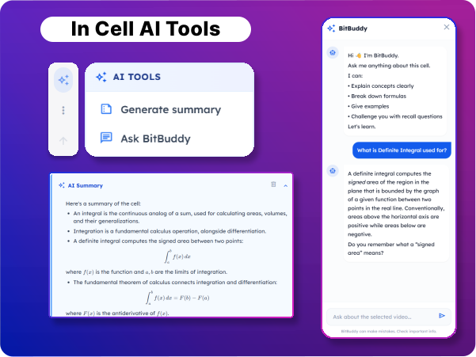
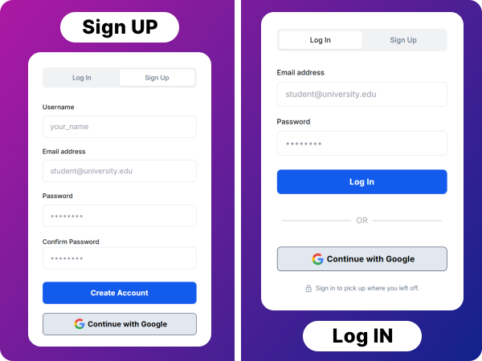
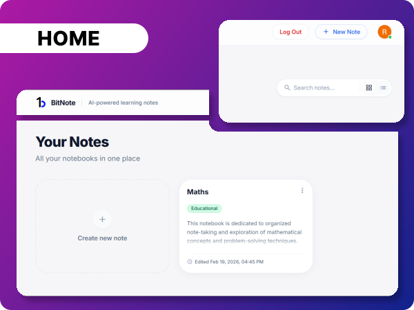
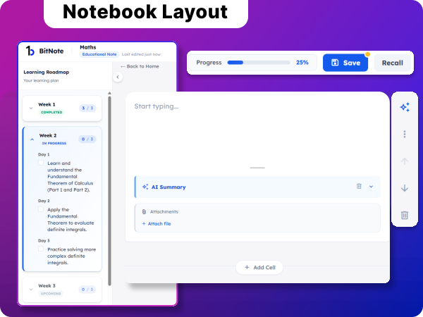

Smarter Notes
Deeper Learning
An AI-powered notebook that helps you learn, remember, and grow — not just write. Turn scattered thoughts into structured knowledge systems.




Designed for Learning, Not Just Writing
AI Educational Notes
Transform raw inputs into structured syllabi. Automatically generates weeks, topics, and key concepts.
Smart Recall
Active recall sessions and quizzes tracked over time to ensure you master the material before moving on.
Learning Roadmaps
Visualize your entire semester. Track progress through weekly checkpoints and syllabus milestones.
Distraction-Free
A clean, academic workspace designed for long study sessions, minimizing clutter for deep focus.
How It Works
From raw ideas to mastered knowledge in four steps.
1. Create a Note
(General or Educational)
Jot down your lecture notes or paste study material.
2. AI Builds Your Learning Structure
AI organizes your content into a structured syllabus and learning roadmap.
3. Learn with Recall & Smart Prompts
Engage with active recall prompts and auto-generated quizzes.
4. Track Progress Over Time
Visualize your mastery of concepts and completion of weekly goals.
Turn your notes into a
learning system
Join thousands of students and lifelong learners who are mastering topics faster with BitNote.
Create Your First Learning Note